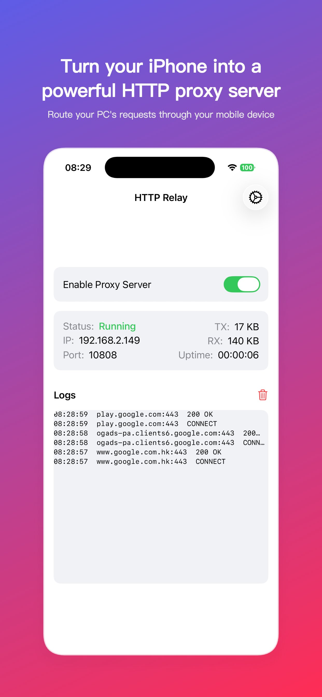
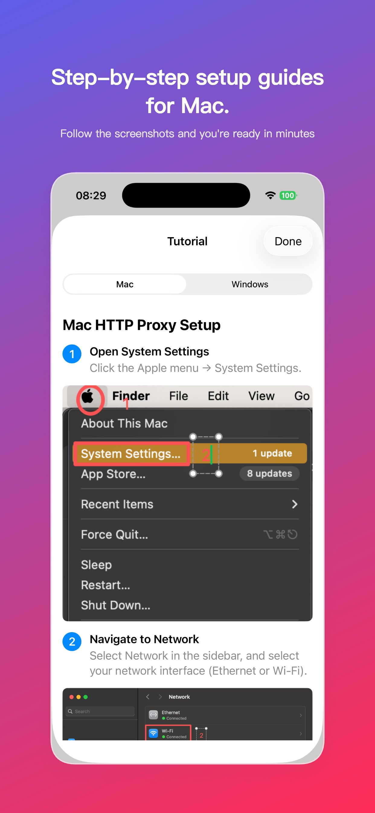
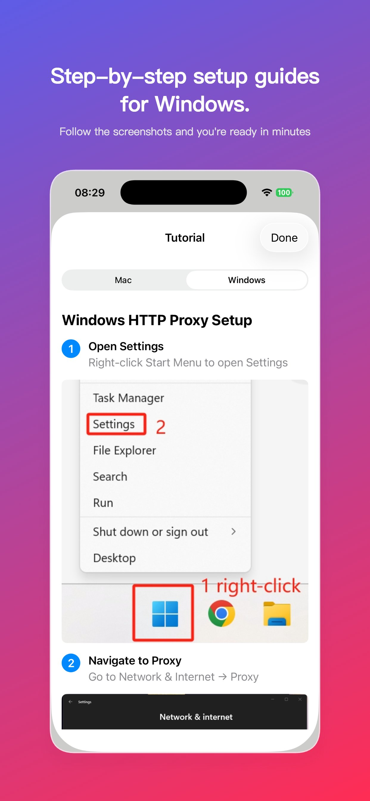

Turn your iPhone into a powerful HTTP proxy server
Runs on configurable port (default 10808)
TX/RX byte counting and connection tracking
Step-by-step tutorials for Mac and Windows
Route traffic through your iOS device



Toggle to enable the proxy server on your iPhone. The server IP and port are displayed automatically.
Follow the built-in setup guide to configure proxy settings on your Mac or Windows PC.
All HTTP/HTTPS traffic from your computer is now routed through your iPhone, giving you access to networks your computer cannot reach directly.